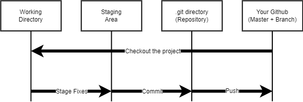

With platform specific installers for Git, GitHub also provides the
ease of staying up-to-date with the latest releases of the command
line tool while providing a graphical user interface for day-to-day
interaction, review, and repository synchronization.
GitHub for Windows GitHub for Mac Git for Linux and UnixGit for All Platforms
Traditional and common centralized version control systems such as CVS adopt a
master-slave
architecture, and files of all versions of a development project are centrally stored on a single
server. On
the developer's local repository, only the history of the latest version is stored. If the developer
wants
to submit a new version, check the differences between versions, or modify the history, he must
connect to
the server through the network. device can be performed. When the project becomes larger and larger
with
more and more versions over time, every action of everyone must be connected to the server, which
will
affect the operation efficiency of the centralized version control system.
The distributed version control system is different. Git is a distributed version
control,
and everyone has a complete local repository. In addition to the complete code of the version, a
local
repository (Repository) is also designed on the local side of each developer, which also stores
all
changed files and the historical records of each version of the project. The remote repository
is not
the only one, but a shared version for multiple people to synchronize project data.
With this complete project on the local repository, developers can submit new
versions of
code to the local repository without going through the Internet. When you need to synchronize
the data
on the local repository to the remote repository, you need to use the network. On Git, this
command is
Push. Therefore, developers have greater flexibility in version control, and their reliance on
the
network is also reduced.
Git Workflow

SETUP
Configuring user information used across all local repositories
git config --global user.name “[firstname lastname]”
set a name that is identifiable for credit when review version historygit config --global user.email “[valid-email]”
set an email address that will be associated with each history markergit config --global color.ui auto
set automatic command line coloring for Git for easy reviewing
STAGE & SNAPSHOT
Working with snapshots and the Git staging area
git status
show modified files in working directory, staged for your next commitgit add [file]
add a file as it looks now to your next commit (stage)git reset [file]
unstage a file while retaining the changes in working directorygit diff
diff of what is changed but not stagedgit diff --staged
diff of what is staged but not yet commitedgit commit -m “[descriptive message]”
commit your staged content as a new commit snapshot
After understand the characteristics of decentralized version control,
the second step is to
become familiar with the Git workflow. When a developer wants to create a development project, he needs
to
create a directory for the project, and use the git init command to create a repository for the project
(Repository). This directory can be called the working directory of the project. All files of the
development
project are stored in this directory, and the Git commands related to the project are executed in the
working
directory. After the command to create a repository is issued, a .git data directory will be created in
this
working directory to store all the information required for version changes.
In addition, Git will also create an index file named index in the .git directory to
record the
processing status of all files in the project, such as committed files stored in the local repository,
or
changed but A modified file that has not been committed to the local repository, or has a state where
the
modified file is marked as a staged file for committing to the next version. This index file is used to
manage
the records of file modifications and whether they are committed to the repository.
In a common Git workflow, a development project (including creating a working directory
and
creating a repository) is first established, and then development work such as adding or modifying files
in the
project directory is completed. When the work is completed, a project will be submitted. The new version
into
the Git local repository. Because the submission action will be performed according to the index file,
the
developer must first create a snapshot to update the index data, and mark the file to be submitted as a
staged
file. Then, the commit command is executed to store the staged file in the repository. To use GitHub to
share
projects with others, developers need to further use the Push command to push a specific version of the
project
from the local repository to the remote repository for consolidation. The next time you want to start
development work, you can first get the new version of the code from the remote repository back to the
local
repository (this action is called Pull), and then put it into the working directory from the local
repository
(this action is called. Checkout), you can proceed to the next round of development.
Master,Branch, and Merge
BRANCH & MERGE
Isolating work in branches, changing context, and integrating changes
git branch
list your branches. a * will appear next to the currently active branchgit branch [branch-name]
create a new branch at the current commitgit checkout
switch to another branch and check it out into your working directorygit merge [branch]
merge the specified branch’s history into the current onegit log
show all commits in the current branch’s history
Master and Branch are called the main version and branch version of the
project. On GitHub,
the first project version created is usually called the Master version. But for Git, there is no difference
between the master and the branch in the version of the development project. Each branch is an equivalent
relationship, and the developer adjusts the version name to distinguish it. It is generally customary to
call
the stable version the trunk, and the rest of the changes and developing versions are called branches.
Branch is
also a Git instruction for establishing a branch, which can copy a historical version and independently
become
another new branch version, while the Merge instruction is just the opposite, which is to merge two
different
branch versions into it. on a branch.
When using Git version control, it is common to develop major features on trunk, and develop
minor
features on branches that branch off from trunk. When a development project is actually working, it is
likely
that the main line of code is a stable and clean version. In order to avoid affecting the stability of the
project, project development and changes are usually carried out on branches. When the function of a branch
has
been fully developed, the function on the branch needs to be applied back to the trunk. At this time, the
merge
will be performed, and the version of the branch will be merged back to the trunk.
Put branches and trunks on the version line map and view them. Branches are another way to
branch
off from the trunk. To improve the efficiency of version control, developers must understand whether the
working
directory they are currently developing is located in the trunk or a branch, so as not to clutter the
version
line graph. For example, the function on the branch has been developed completely, but the trunk is merged
into
the branch, so that there is no new function on the branch on the stable version, but the main function of
the
stable version is on the branch.
Most developers develop on the trunk, but each version has different purposes and functions.
If
the version is only built on the one-stop trunk, it is still difficult for the team to track the software.
development process.
Git provides a visual version line graph (commit graph) to present the tree structure formed by
the
connection between the trunk and each branch. However, as the project gets larger, the version line graph
becomes more and more complex. The user can make good use of merge instructions to unify unnecessary
branches
and organize the version line diagram clearly.
Tags
TAGS
Capture a point in history that is used for a marked version release (i.e. v1.0.1)
git tag [tagname]
Creating a taggit tag v1.4-lw
Lightweight Tagsgit tag -a v1.4
Annotated tags are stored as full objects in the Git database
Git can tag versions at a point in time. This is often done when doing a
version release.
There are two types of tags used by Git: lightweight and annotated.
Lightweight tags: Like a branch that doesn't change, it's actually a reference to a specific
commit object.
Annotated tags: It is actually a separate object stored in the repository, it has its own
checksum
information, contains the label's name, email address and date, and the label description, the label itself
also
allows the use of GNU Privacy Guard ( GPG) to sign or verify.
To sum up, the lightweight tag is a reference, and the annotation tag is a separate object.
Annotation tags are generally recommended to retain relevant details.
Clone and Fork
SETUP & INIT
Configuring user information, initializing and cloning repositories
git init
initialize an existing directory as a Git repositorygit clone [url]
retrieve an entire repository from a hosted location via URL
The Clone command is to copy all the content of the project in the remote
repository to the
local, to create a local repository and working directory, while the Fork is to copy the content of the
remote
repository of other people's projects.
If the developer sees an interesting project on GitHub, he can execute the Fork command to copy
the
remote repository of other projects to his own remote repository, and then execute the Clone command to copy
the
entire project of his own remote repository. , including versions, to the local repository.
Push, Pull, and Pull Request
SHARE & UPDATE
Retrieving updates from another repository and updating local repos
git remote add [alias] [url
add a git URL as an aliasgit fetch [alias]
fetch down all the branches from that Git remotegit merge [alias]/[branch]
merge a remote branch into your current branch to bring it up to dategit push [alias] [branch]
Transmit local branch commits to the remote repository branchgit pull
fetch and merge any commits from the tracking remote branch
Execute the push (Push) command, you can upload the relevant files of your
current local
repository to the remote repository, while the pull (Pull) command downloads the latest version of the
remote
repository to your local side. And merge the remote branch into the local branch. However, Pull does not
download the content of each version of the complete project like the Clone command.
Developers can execute Pull to obtain the code on the remote repository authorized by
others,
or
push the code modified by themselves to the accessible third-party remote repository. Through the push
(Push)
and pull (Pull) two commands, developers can share the source code with each other.
Pull Request, on the other hand, is more proactive in requiring third-party developers to
include
their own programs, and integrate the code on the local repository into the other side's repository. For
example, member A can request member B through a Pull Request to incorporate the code modified by member
A
into
member B's development project.